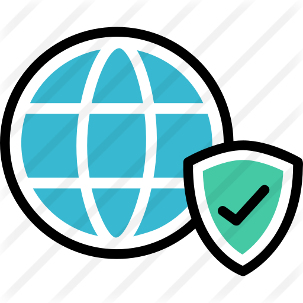

Segurança na WEB - Para usuários e programadores

INTRODUÇÃO (princípios de usuário)
1.1 - O que é segurança na internet?
Segurança na Internet são todos os cuidados que devemos ter para proteger as coisas que fazem parte da internet como a infraestrutura, que podem ser nossos computadores e as informações, que são as mais atacadas pelos cibercriminosos.
Ela cria métodos, procedimentos e normas que buscam identificar e eliminar as vulnerabilidades das informações e dos equipamentos físicos, como os computadores.
Este tipo de segurança conta com bases de dados, arquivos e aparelhos que fazem com que as informações importantes não caiam em mãos de pessoas erradas.
Uma das melhores formas de se manter seguro na internet é usando antivírus nos computadores, por isso sempre recomendamos ter um instalado nos seus equipamentos.
1.2 - Os principais riscos da Internet
Algumas das coisas que os cibercriminosos tentam fazer pela Internet são:
- Roubar informações
- Corromper informações
- Atacar sistemas ou equipamentos
- Roubar identidade
- Vender dados pessoais
- Roubar dinheiro
Os criminosos cibernéticos usam várias maneiras para atacar uma vítima na rede.
Eles podem por exemplo, usarem vírus para tentar romper o sistema e alterar o funcionamento
dos aparelhos eletrônicos. Outra modalidade é o phishing, onde o cibercriminoso se passa por
uma pessoa diferente através de e-mails, mensagens instantâneas ou redes sociais, para conseguir
informações confidenciais, como senhas, números de cartões de crédito, e outros.
1.3 – Dicas Fundamentais:
Neste mundo virtual, algumas medidas básicas de segurança são necessárias:
- Nunca abrir arquivos anexados a e-mails de pessoas ou empresas desconhecidas. E, mesmo que o remetente seja conhecido, passar um bom antivírus antes de abrir o arquivo;
- Manter no computador um bom antivírus, sempre atualizado;
- Deixar o firewall do Windows sempre ativado;
- Fazer sempre as atualizações necessárias do Sistema Operacional;
- Nunca instalar programas piratas no computador, eles podem trazer vírus ou outros programas perigosos;
- Não abrir pen-drives ou CDs/DVDs de outras pessoas sem antes passar o antivírus;
- Seguir sempre as orientações do banco para acessar sua conta pela Internet;
- Não digitar senhas e dados pessoais em computadores públicos (lan houses, empresas, etc);
- Não criar senhas com datas de aniversários, sequências numéricas fáceis ou nome de pessoas. Uma sugestão é criar senhas intercalando letras, números e caracteres especiais (#, por exemplo);
- Cuidado ao utilizar o cartão de crédito em compras online. Ter certeza que a loja virtual é segura;
- Não clicar em links mostrados por e-mails desconhecidos. Eles costumam instalar vírus ou cavalos-de-tróia (programas que roubam dados do computador);
- Não divulgar dados pessoais (endereços, números de documentos, etc.) em redes sociais (Facebook, Twitter, etc.).
E quando estivermos falando de desenvolvedores web? (princípios de desenvolvedor)
2.1 - Existem muitas razões para aprender sobre segurança na Web, tais como:
- Um usuário que está preocupado com o vazamento de seus dados pessoais
- Um desenvolvedor e quer tornar seus aplicativos da Web mais seguros
- Um desenvolvedor e está se candidatando a novas oportunidades e quer ficar preparado, caso o entrevistador pergunte sobre Segurança na Web
E assim por diante...
2.2 - Cross-Origin Resource Sharing (CORS)
O que é?
O CORS (Cross-origin Resource Sharing) é um mecanismo utilizado pelos navegadores para compartilhar recursos entre diferentes origens. O CORS é uma especificação do W3C e faz uso de headers do HTTP para informar aos navegadores se determinado recurso pode ser ou não acessado.
E como funciona?
Na teoria e prática, os cookies de autenticação são usados para informar ao servidor que você está logado, e eles são enviados automaticamente com qualquer solicitação que você faça para esse servidor.
Digamos que você esteja conectado ao Facebook e use cookies de autenticação. Você clica em um link que te redireciona para determinado site. Um script dentro desse site faz uma solicitação do lado do cliente para o facebook.com no qual envia o seu cookie de autenticação.
Em um mundo sem CORS, eles podem fazer alterações em sua conta sem que você saiba. Até que, é claro, eles postem esse link em sua linha do tempo, e todos os seus amigos cliquem nele, e então publiquem o mesmo em todas as contas de seus amigos e então o ciclo continua em um esquema maligno que conquista todos os usuários do Facebook, e o mundo é consumido por ESSE determinado website.
Em um mundo com CORS, no entanto, o Facebook só permitiria solicitações com origem facebook.com para edição de dados de um usuário em seu servidor. Em outras palavras, eles limitariam o compartilhamento de recursos de origem cruzada.
Bem, mas afinal de contas, pode esse determinado site apenas alterar o cabeçalho de origem na requisição, de modo que pareça que está vindo de facebook.com?
Eles podem tentar, mas não funciona porque o navegador simplesmente ignora a alteração e usa a origem real.
Ok, mas e se esse determinado website fizesse a solicitação do lado do servidor?
Nesse caso, eles poderiam ignorar o CORS, mas não funcionaria porque não teremos um cookie de autenticação para a requisição. O script precisaria ser executado no lado do cliente para obter acesso aos cookies do lado do cliente.
2.3 - Content Security Policy (CSP)
Para entender o CSP, primeiro precisamos falar sobre uma das vulnerabilidades mais comuns na Web: XSS, que significa cross-site scripting (scripting entre sites, outro acrônimo).
XSS é quando alguma pessoa malvada injeta JavaScript em seu código do lado do cliente. Você pode pensar:
O que eles vão fazer? Alterar uma cor de vermelho para azul?
Vamos supor que alguém tenha injetado com sucesso o JavaScript no código do lado do cliente de um site que está sendo visitado:
O que eles poderiam fazer que seria malicioso?
- Eles poderiam fazer solicitações HTTP para outro site fingindo ser alguém.
- Eles podem adicionar um link que o direcione para um site que pareça idêntico ao que alguém está usando com algumas características maliciosas ligeiramente diferentes.
- Eles poderiam adicionar uma tag de script com JavaScript inline.
- Eles poderiam adicionar uma tag de script que busca um arquivo JavaScript remoto em algum lugar.
- Eles podem adicionar um iframe que cubra a página e parece parte do site solicitando que alguem insira a senha de acesso.
O CSP tenta evitar que isso aconteça limitando:
- O que pode ser aberto em um iframe
- Quais folhas de estilo podem ser carregadas
- Onde as requisições podem ser feitos, etc.
Então, como isso funciona?
Quando você clica em um link ou digita uma URL na barra de endereços do seu navegador, o seu navegador faz uma solicitação GET. Eventualmente, ele faz o caminho para um servidor que serve HTML junto com alguns cabeçalhos HTTP. Se você está curioso sobre quais cabeçalhos você recebe, abra a guia Network no console e visitar alguns sites.
Algumas diretivas que podem ser usadas:
- default-src: restringe todas as outras diretivas de CSP que não estão listadas explicitamente.
- script-src: restringe os scripts que podem ser carregados.
- style-src: restringe as folhas de estilo que podem ser carregadas.
- connect-src: restringe as URLs que podem ser carregadas usando interfaces de script, portanto, fetch, XHR, ajax, etc.
Perceba que há muito mais diretivas CSP do que apenas estas três mostradas acima. O navegador lerá o cabeçalho CSP e aplicará essas diretivas em tudo dentro do arquivo HTML que foi exibido. Se as diretivas são definidas apropriadamente, elas permitem apenas o que é necessário.
Se nenhum cabeçalho CSP estiver presente, tudo será executado e nada será restrito. Em todo lugar que você ver *, significa que é um curinga. Você pode imaginar a substituição de * por qualquer coisa, e ela será permitida/executada.
2.4 - HTTPS ou HTTP
Em essência, o HTTPS é bastante simples. HTTPS é criptografado e HTTP não é.
MITM significa Man in the Middle.
Se alguém estiver usando Wi-Fi público sem senha em uma cafeteria, é muito fácil para alguém agir como um roteador, onde todas as solicitações e respostas passem por ele. Se os seus dados não estiverem criptografados, esse roteador pode fazer o que quiser com eles. Podem editar o HTML, CSS ou JavaScript antes mesmo de chegar ao seu navegador. Agora que sabemos sobre o XSS, você pode imaginar o quão ruim isso poderia ser.
Ok, mas como é que o meu computador e o servidor sabem como criptografar/descriptografar mas esse MITM não?
É aí que entra o SSL (Secure Sockets Layer) e, mais recentemente, o TLS (Transport Layer Security). O TLS assumiu o controle do SSL em 1999 como a tecnologia de criptografia usada no HTTPS.
2.5 - HTTP Strict-Transport-Security (HSTS)
Este é bastante simples. Podemos usar o cabeçalho do Facebook como exemplo novamente:
strict-transport-security: max-age=15552000; preload
- max-age: especifica por quanto tempo um navegador deve se lembrar de forçar o usuário a acessar um site usando HTTPS.
- preload: não é importante para nossos propósitos. É um serviço hospedado pelo Google e não faz parte da especificação do HSTS.
Este cabeçalho só se aplica se alguém acessou o site usando HTTPS. Se essa pessoa acessou o site via HTTP, o cabeçalho será ignorado. A razão é que, simplesmente, o HTTP é tão inseguro que não é confiável.
Vamos usar o exemplo do Facebook para ilustrar melhor como isso é útil na prática. Algém está acessando facebook.com pela primeira vez e essa pessoa sabe que o HTTPS é mais seguro que o HTTP, então você o acessa via HTTPS https://facebook.com. Quando o navegador recebe o HTML, ele recebe o cabeçalho acima, que informa ao navegador para forçar o redirecionamento para HTTPS para solicitações futuras. Um mês depois, alguém envia um link para o Facebook usando HTTP http://facebook.com, e essa pessoa clica nele. Como um mês é menor do que os 15552000 segundos especificados pela diretiva max-age, o navegador enviará a solicitação como HTTPS, evitando um potencial ataque do MITM
3 - CONCLUSÃO.
A segurança na Web, desde o nível usuário ao nível desenvolvedor deve ser considerada em todos seus aspectos abrangentes, seja para segurança de informações e dados tanto para implementação num website. Quanto mais conhecimento, automaticamente mais segurança e preparo alguém estará para qualquer ataque ou tentativa, seja de phishing, roubo de dados, etc.